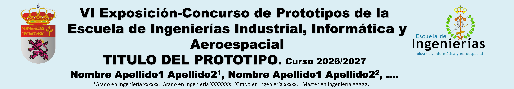
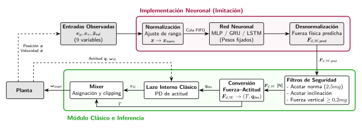
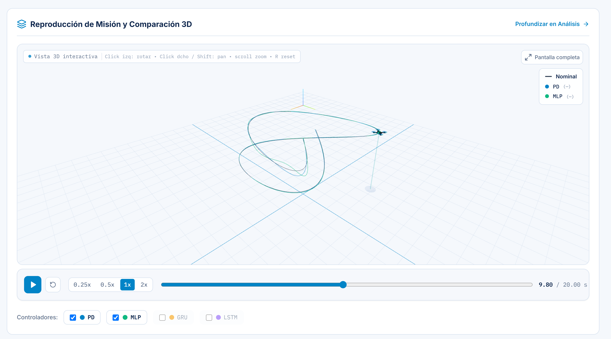
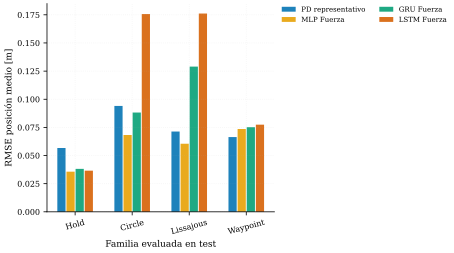

NEUROFLIGHT. Curso 2026/2027
Grado en Ingeniería Aeroespacial
INTRODUCCIÓN
El control de un cuadricóptero exige seguir una referencia de posición mientras cambian la actitud, el empuje y las perturbaciones. En mi Trabajo de Fin de Grado construí un simulador dinámico de seis grados de libertad para estudiar el seguimiento de manera reproducible.
El trabajo compara un controlador clásico PD con tres alternativas neuronales, MLP, GRU y LSTM, entrenadas para imitar la fuerza calculada por el lazo externo.
OBJETIVO
La pregunta central es qué ocurre cuando una red sustituye el lazo externo y se cierra el control sobre la dinámica del vehículo. La fidelidad a las órdenes del controlador clásico, medida en la evaluación supervisada, no responde por sí sola a esa pregunta.
NeuroFlight convierte el estudio en una prueba. Eliges una trayectoria, ajustas los parámetros y perturbaciones y observas la respuesta de los controladores ante una misma misión.
CONTEXTO Y ARQUITECTURA
El modelo incluye dinámica rígida 6DOF, actuadores y perturbaciones. En la arquitectura híbrida, la red predice una fuerza deseada; los filtros, la conversión fuerza-actitud y la estabilización interna siguen en el módulo clásico.

DISEÑO Y DESARROLLO
La aplicación parte del simulador y de los modelos existentes entrenados para el TFG. Antes de ejecutar la simulación, se puede observar la geometría del escenario. Posteriormente, la comparación 3D reproduce de manera sincronizada las trayectorias simuladas.
Para cada controlador se muestran el estado de la ejecución y los errores de posición. La vista de Análisis permite examinar señales temporales, parámetros y protecciones.
LA APLICACIÓN
La captura muestra una misión nueva de Lissajous. Se representa la referencia de la ruta y las trayectorias recorridas por el controlador PD y MLP.

EVALUACIÓN

MLP obtuvo menor error en círculo y Lissajous. En waypoint ninguna red superó claramente al PD representativo. Imitar mejor la fuerza no garantizó seguir mejor la trayectoria en bucle cerrado.
LIMITACIONES Y TRABAJO FUTURO
Las pruebas se realizan en simulación que no equivale a un vuelo real. Las misiones en NeuroFlight usan los pesos congelados del TFG y no sustituyen a la memoria. La respuesta varía con la geometría, perturbaciones y límites de actuación.
Una ampliación sería estudiar otras perturbaciones y definir una validación específica con datos de vuelo antes de extrapolar conclusiones al mundo físico.
CONCLUSIONES
El trabajo muestra que reproducir con precisión una orden de control no basta para asegurar mejor seguimiento en bucle cerrado. La arquitectura mantiene una parte clásica para la estabilización y las protecciones.
En el TFG se estudió un conjunto cerrado y equilibrado de trayectorias, demostrando que la arqitectura híbrida se comportaba mejor que un PD para trayectorias compuestas. Esto demuestra que las redes aprendieron una adaptabilidad a partir de los PD especilizados para trayectorias concretas. La aplicación hace observable esa diferencia en una misión elegida. Las rutas, tiempos y métricas describen cada ejecución, mientras la gráfica del TFG resume una evaluación experimental más amplia. Esta separación permite explorar el sistema más allá de la conclusión general.